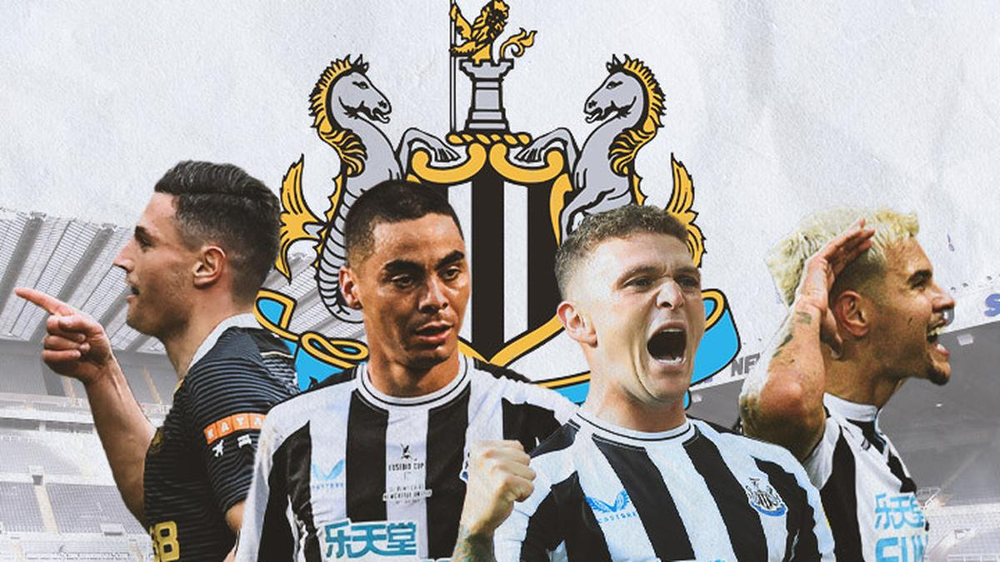
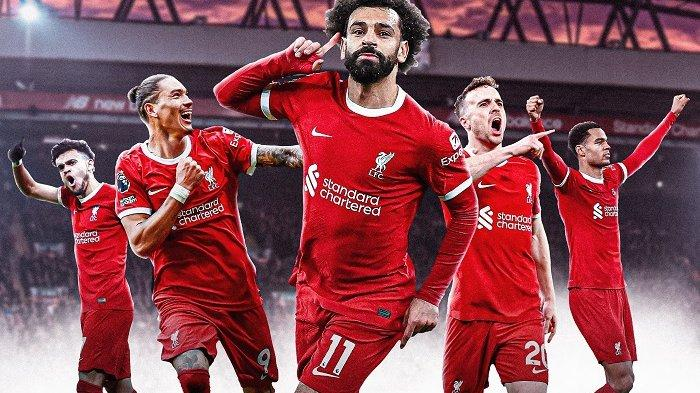
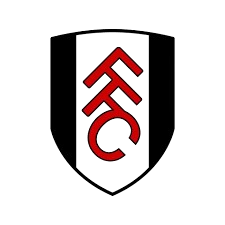
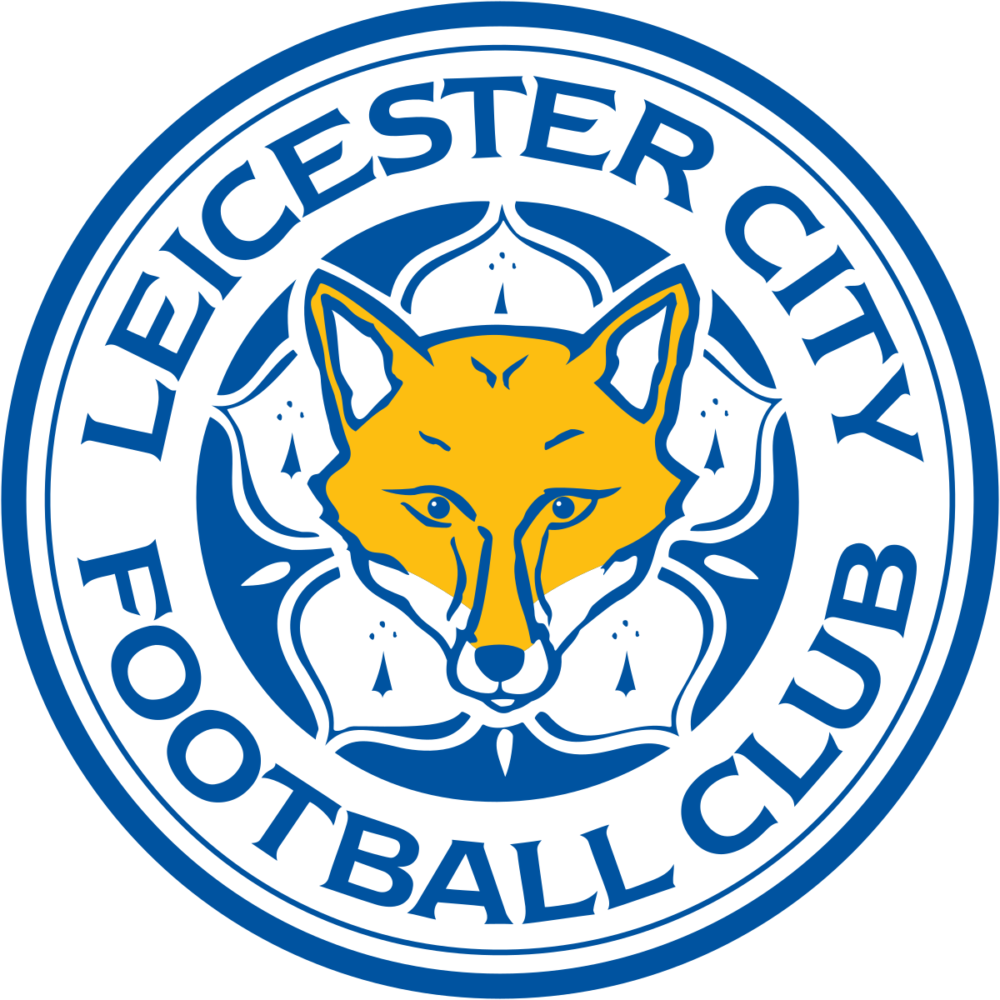

- 
- 

BERITA
lainnyaBerita Terbaru Chelsea
Chelsea membuktikan diri dengan rentetan penampilan yang mengantarkan mereka bercokol di peringkat empat tangga Liga Premier. Sementara para pelapis tampil memukau di Liga Konferensi.
selanjutnyaBerita Terbaru Brighton
Richards, 18 tahun, bergabung dengan Brighton setelah ditebus di harga awal £1 juta. Klub Liga Primer Inggris Brighton & Hove Albion telah merampungkan transfer gelandang muda Manchester City Taylor Richards. Media di Inggris meyakini, Brighton hanya mengeluarkan uang £1 juta saja, selagi nilainya bisa melonjak jadi £2,5 juta tergantung penampilan sang pemain. Richards, 18 tahun, memulai kariernya di tim City U-18 dan di gelaran kemarin masuk dalam skuad U-23 arahan Paul Harsley.
read moreUpdate Seputar Man City
Hasil ini menjadi kekalahan keempat secara beruntun buat Man City dengan dua di antaranya terjadi di ajang Liga Inggris. Sementara bagi Guardiola, ini merupakan kali pertama dalam sejarah kepelatihannya untuk kalah dalam empat laga berturut-turut. Setelah laga, Guardiola mengisyaratkan sudah menyerah dalam perburuan gelar Liga Inggris.
read moreUpdate Seputar Manchester United
Nama Ruben Amorim pun dipilih sebagai suksesor Ten Hag di kursi kepelatihan Manchester United. Man United langsung mengumumkan kehadiran Ruben Amorim pada Jumat (1/11/2024). Pengumuman tersebut dipasang di situs resmi dan semua kanal media sosial klub.
read moreUpdate berita lainnya
lainnyaLeicester city
Setelah mengakhiri karier sebagai pemain pada tahun 2012, Van Nistelrooy memulai perjalanan sebagai pelatih dengan menangani tim U-17 PSV di tahun berikutnya. Mantan striker Manchester United ini menghabiskan waktu 14 bulan melatih tim utama PSV, di mana ia berhasil mengalahkan Ajax di final Piala Belanda serta Piala Super Belanda. Selain itu, Van Nistelrooy juga pernah menjabat sebagai asisten pelatih di Timnas Belanda di bawah arahan Guus Hiddink dan Ronald Koeman. Saat ini, pelatih berusia 48 tahun ini kembali ke Manchester United pada musim panas sebagai bagian dari staf kepelatihan Erik Ten Hag.
read moreNotthingham forrest f.c
Evan Ferguson dipinjamkan ke Brighton and Hove Albion menjelang Januari Evan Ferguson hanya tampil dalam 105 menit sepak bola untuk Brighton sejauh musim ini. Dia kesulitan untuk membuat dampak ketika memimpin lini depan Seagulls dengan satu gol atas namanya, yang membuat Fabian Hurzeler beralih ke Danny Welbeck sebagai pemain nomor sembilan. Dan sekarang tampaknya Brighton mengutamakan perkembangannya karena mereka telah menyediakannya untuk dipinjamkan menjelang jendela transfer Januari.
read moreTottenham Hotspurs
bakal tetap tampil menyerang saat menghadapi AS Roma. Meskipun gaya main menyerang The Lilywhites ini beberapa kali tak berjalan dengan baik. Tottenham akan menjamu AS Roma di Tottenham Hotspur Stadium pada matchday kelimaLiga Europa 2024/2025, Jumat (29/11/2024). The Lilywhites menyongsong laga ini dengan modal apik. Mereka baru saja meraih kemenangan besar di markas juara bertahan Liga Inggris, Man City 4-0. Spurs bertekad melanjutkan tren apik ini di laga melawan Roma.
read moregallery
moreKlasemen
more- 1. Liverpool (31 poin)
- 2. Arsenal (23 poin)
- 3 chelsea (22 poin)
- 4 Brighton Albion (22 poin)
- 5 Man City (22 poin)
- 6 Tottenham Hostpurs (19 poin)
- 7 Notthingham (19 poin)
- 8 Aston Villa (19 poin)
- 9 Fulham (18 poin) 
- 10 Newcastle United (18 poin)
- Brentford (17 poin)
- Manchester United (16 poin)
- Bournemouth (15 poin)
- Westham (14 poin)
- Everton (13 poin)
- Leicester City (10 poin) 
- Wolves (8 poin)